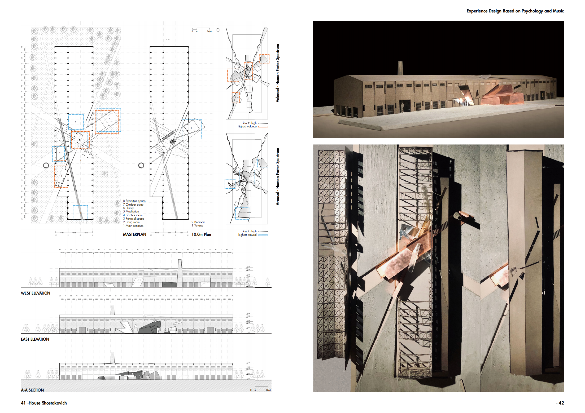
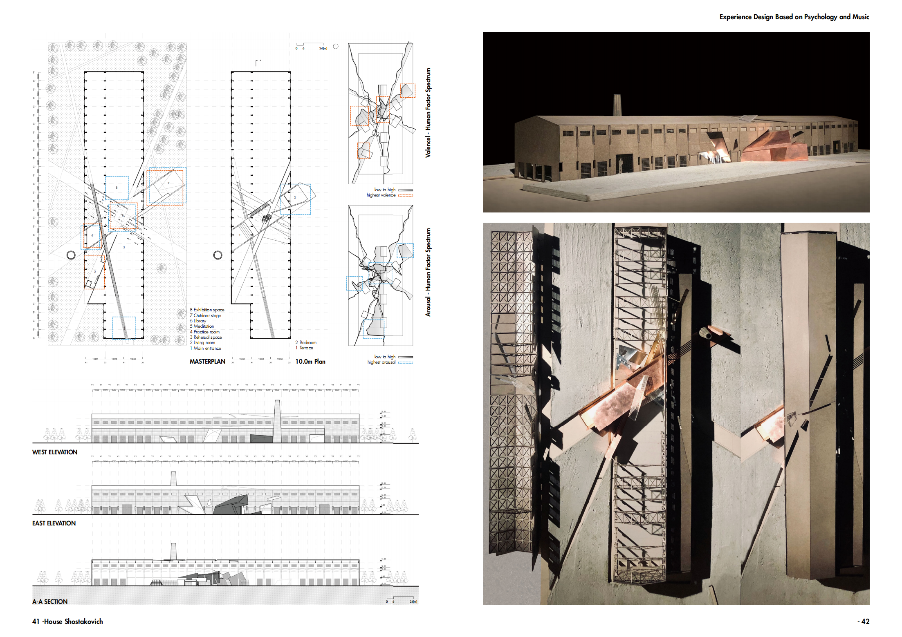
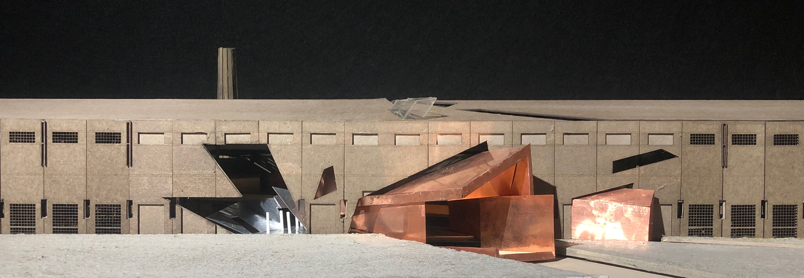
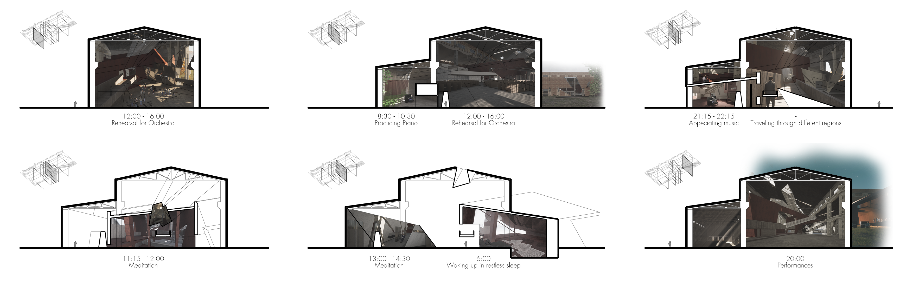
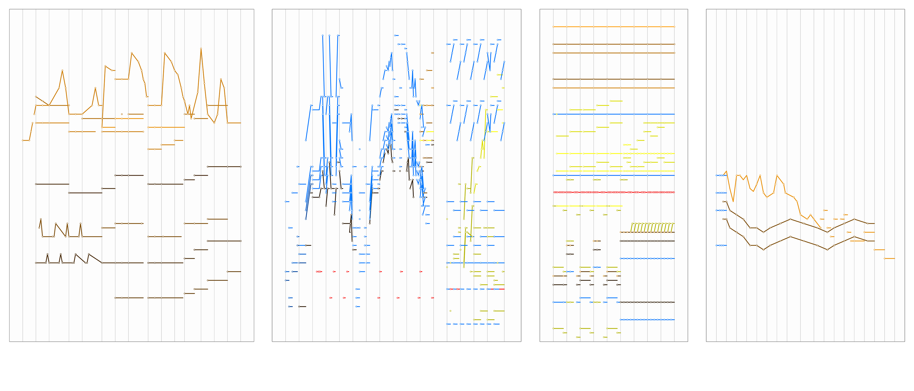
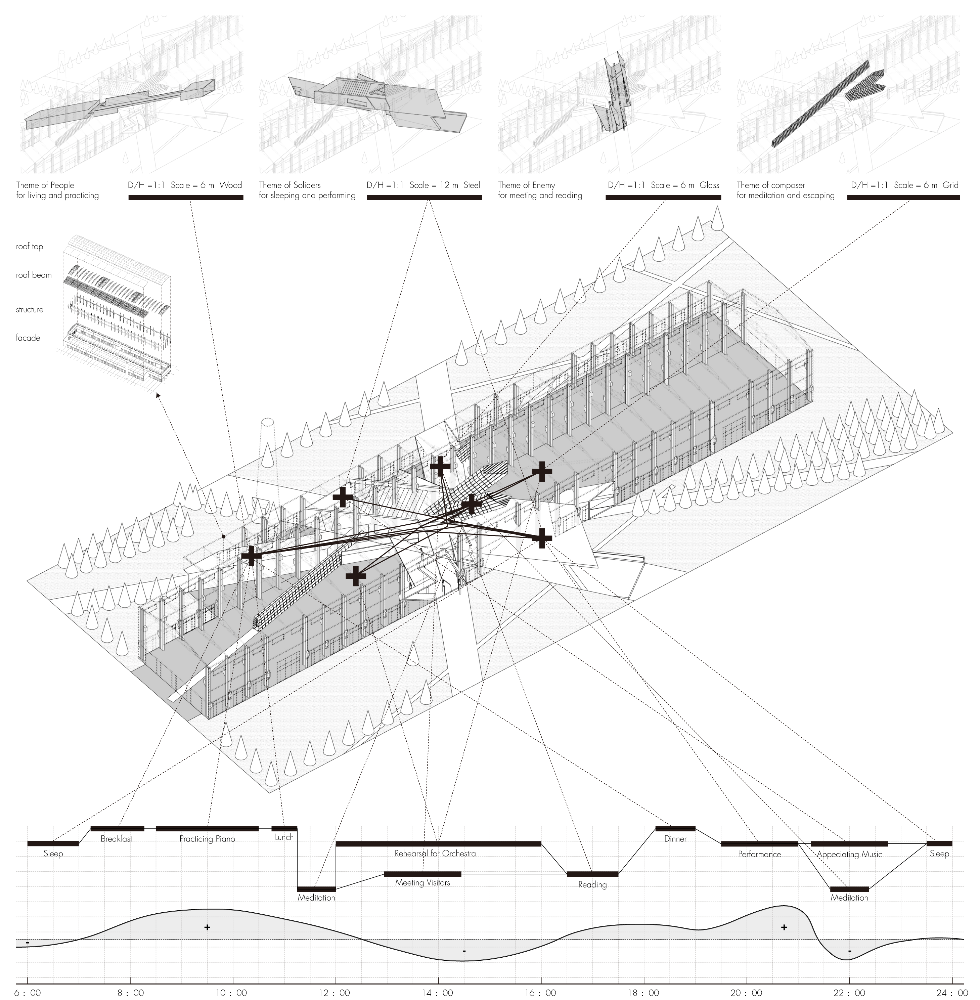

Space Shostakovich
-
The project task requires designers to select a historical figure and choose a site within the urban space of contemporary Beijing to create a personalized spatial design.
1.Site
I have chosen the Soviet composer Dmitri Shostakovich. Through an in-depth understanding of his life, I focused on the subtle relationship between Shostakovich and Stalin. Based on this, I selected an abandoned heavy machinery factory in Beijing as the site. The factory's original robust, oversized structural components and the strictly ordered spatial arrangement resonate strongly with the oppressive ruling style of Stalin.
2.Melody Visualization
Through a study of Shostakovich's most influential and controversial work, Shostakovich's Symphony No. 7, I utilized Iannis Xenakis' visualization methods to map the melodic trajectories of different instruments. This process led to the identification of four key expressive themes for the Shostakovich-inspired space: The People, The Warriors, The Army, and The Composer. The melodic lines and tonal qualities of the music were then used to define the experiential atmosphere of each spatial component.
3.Spatiotemporal Experience Journey Map
After defining the spatial themes, I integrated the four major themes into the original factory space, varying their size, shape, orientation, and material. Through this process, I mapped the trajectory of light across these spaces during different times of the day and envisioned potential human behaviors within them. This allowed me to design and orchestrate the experiential content for individuals interacting with the space.
4.Physical Model Making
I independently created a 1:100 scale physical model (approximately 1.2m long and 0.6m wide) using methods such as laser engraving on gray cardboard, post-coloring, concrete casting, and real copper sheets. This work was selected as an Outstanding Student Project by the School of Architecture at Tsinghua University. -
Design Type: Experience Design, Architecture Design
Project Type: Tsinghua University Open Studio Work
Time: 2021.2-2021.5
Instructor: Ji Li, ORIGINAL ARTECTURE
Collaborator: Individual Work
Main Contributions:
1.Independently conducted a literature review, selected the site location, and created a 3D model；
2.Visualized the sheet music of Shostakovich's Symphony No. 7 using Iannis Xenakis' methodology and identified 4 major thematic spaces；
3.Integrated the literature review and visualization results to design a spatiotemporal experience journey map for user interaction；
4.Independently created a 1:100 architectural physical model using techniques such as laser engraving and cement casting.
Prize: Outstanding Student Project of School of Architecture, Tsinghua University








